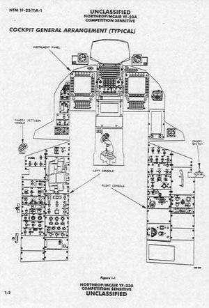
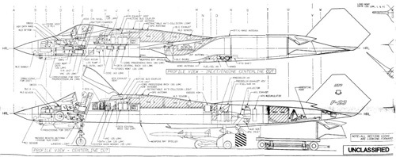

YF-23


SPECIFICATIONS
Crew: 1 (pilot)
Length: 67 ft 5 in (20.60 m)
Wingspan: 43 ft 7 in (13.30 m)
Height: 13 ft 11 in (4.30 m)
Wing area: 900 ft2 (88 m2)
Empty weight: 29,000 lb (13,100 kg)
Loaded weight: 51,320 lb (23,327 kg)
Max. takeoff weight: 62,000 lb (29,000 kg)
Powerplant: 2 × General Electric YF120 or Pratt & Whitney YF119 turbofan, 35,000 lbf (156 kN) each Maximum speed: Mach 2.2+ (1,650+ mph, 2,655+ km/h) at altitude
Cruise speed: Mach 1.6 (1,060 mph, 1,706 km/h) supercruise at altitude
Range: over 2,790 mi (over 4,500 km)
Combat radius: 750–800 nmi (865–920 mi, 1,380–1480 km)
Service ceiling: 65,000 ft (19,800 m)
Wing loading: 54 lb/ft2 (265 kg/m2)
Thrust/weight: 1.36
Armament: (planned)
Internal gun 20 mm M61
Internal bay - 8x AIM-9 Sidewinder or 4x AIM-120 AMRAAM; A-G missiles "Have Dash 2", A-G missiles "Have Slick"